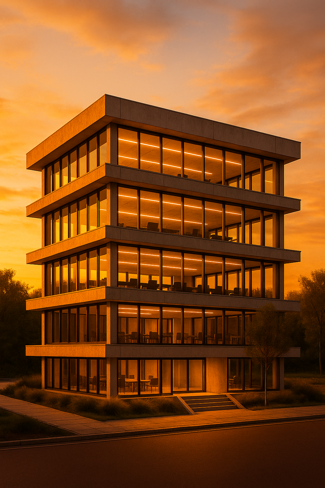

Lumen Hollow
Lumen Hollow explores the future of workplace architecture through parametric design and immersive daylight simulation. This project merges innovative structural forms with modern environmental comfort and visual impact.
Main Visualization
High-resolution concept render highlighting the bold architectural forms and daylight performance.

Sunset Illumination
Simulation of natural light at dusk, emphasizing atmosphere, transparency, and interior warmth.
- Advanced parametric design for customized structure and envelope
- Daylight simulation for occupant well-being and energy efficiency
- Visually engaging renders for client presentations and marketing
Conclusion: Lumen Hollow demonstrates how data-driven design and modern visualization elevate the architectural experience, delivering beauty and performance for next-generation workspaces.